5. State Space Computations¶
Now we describe the implementation for the key tasks involved so far. We will need to:
- compute state state partitions:
 ;
; - construct transitions from each subspace
 into corresponding sets
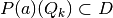, for every possible action profile
into corresponding sets
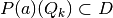, for every possible action profile  ;
; - record intersections 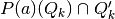, for every 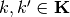; and
- sample uniform points from each , and check for nonempty samples that end up transitioning to each respective intersecting set .
5.1. Storage¶
We only need to store:
each index
 , which refers to some partition element(s)
, which refers to some partition element(s)  whose subset
whose subset  is accessible from
is accessible from  given operator
given operator  .
.- This suffices for indexing the correct slices of equilibrium payoff sets over the corresponding subset of the state space
 .
.
- This suffices for indexing the correct slices of equilibrium payoff sets over the corresponding subset
the finite number of vertices of each
and the corresponding linear (weak) inequality representation of each .- This will become apparent later when we solve separable bilinear programming problems where it involves optimizing over these subsets (when constructing max-min punishment values in the game).
- This will become apparent later when we solve separable bilinear programming problems where it involves optimizing over these subsets
the sub-samples from all the Hit-and-Run realizations that belong to every partition element
which will end up in particular intersections summarized by
each polytope .
5.2. Implementation¶
Since we have finite partition elements and finite action
profile set  , then we can enumerate and store all intersections
previously denoted by
, then we can enumerate and store all intersections
previously denoted by  or equivalently by their index sets
or equivalently by their index sets  .
.
Pseudocode
 :
:Get vertex representation of

Set
as 
Get vertex representation
 from
from 
- Simulate Hit-and-Run uniform realizations in simplex . Get

- Simulate Hit-and-Run uniform realizations in simplex
Set
 For each 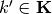:
For each 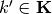:- Get vertex representation of

- Get intersection
 (a polytope) as:
(a polytope) as:

If 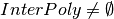:
- Set

- Store index to partition elements when 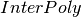 is nonempty. Set

- Store vertex data of polytope. Set:

- Store linear inequality representation of the same polytope. Set:
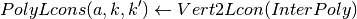
- Map Monte Carlo realizations
 under operator . Set:
under operator . Set:
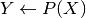
- List members of
 that end up in . Set:
that end up in . Set:
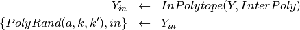
- Record all vectors 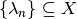 that induce
 under map :
under map :

- Store corresponding indices
 :
:
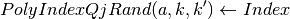
- Set
- Get vertex representation of
Return: 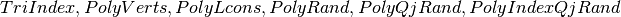
Note
Computationally, we only need to construct sets  (e.g. PolyVerts and
PolyLcons in the pseudocode above) or
(e.g. PolyVerts and
PolyLcons in the pseudocode above) or  (i.e. TriIndex in the pseudocode above) once beforehand.
(i.e. TriIndex in the pseudocode above) once beforehand.
Relevant functions 
-
Simplex_IntersectPmap(self)¶ Returns 4 possible output:
QP :
- a structure variable containing all others below.
TriIndex :
- a cell array containing indices 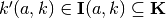 of partition elements that have non-empty intersections with each simplicial image 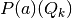.
PolyVerts :
- a cell array, where each cell is an array with rows corresponding to vertices of 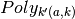, a polytope contained in the partition element . Each cell element is consistent with the index
 stored in TriIndex.
stored in TriIndex.
- a cell array, where each cell is an array with rows corresponding to vertices of 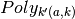, a polytope contained in the partition element
PolyLcons :
- is a set of linear (weak) inequality constraint representation of PolyVerts.
PolyRand :
- Realizations of random vectors
 where
where  and
and ![\lambda_{s} \sim \textbf{U}[Q_{k}]](_images/math/113e5e0a39420542fcc637a179dce010927f29c8.png) —i.e. is uniformly drawn from according to a Hit-and-Run algorithm [ HYPERLINK TO ALGORITHM DESCRIPTION ], classified according to each PolyVerts{a}{k}{k’}.
—i.e. is uniformly drawn from according to a Hit-and-Run algorithm [ HYPERLINK TO ALGORITHM DESCRIPTION ], classified according to each PolyVerts{a}{k}{k’}.
- Realizations of random vectors
PolyQjRand :
- Inverse of PolyRand. Each PolyQjRand{a}{k}{k’} gives the set of , where under action profile
 , the induced vector is 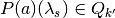 and .
, the induced vector is 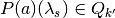 and .
- Inverse of PolyRand. Each PolyQjRand{a}{k}{k’} gives the set of
PolyIndexQjRand :
- Each PolyIndexQjRand{a}{j} gives the set of indices
 . The number of Monte Carlo simulations of these uniform vectors subject to each convex body has to be prespecified as
. The number of Monte Carlo simulations of these uniform vectors subject to each convex body has to be prespecified as  .
.
- Each PolyIndexQjRand{a}{j} gives the set of indices
See also
PolyBool, Simplex_Intersect, Vert2Lcon, RandPolyFill, cprnd